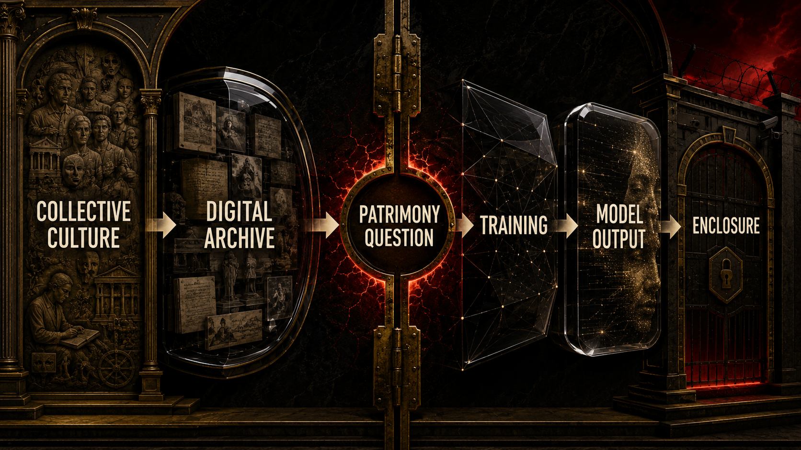
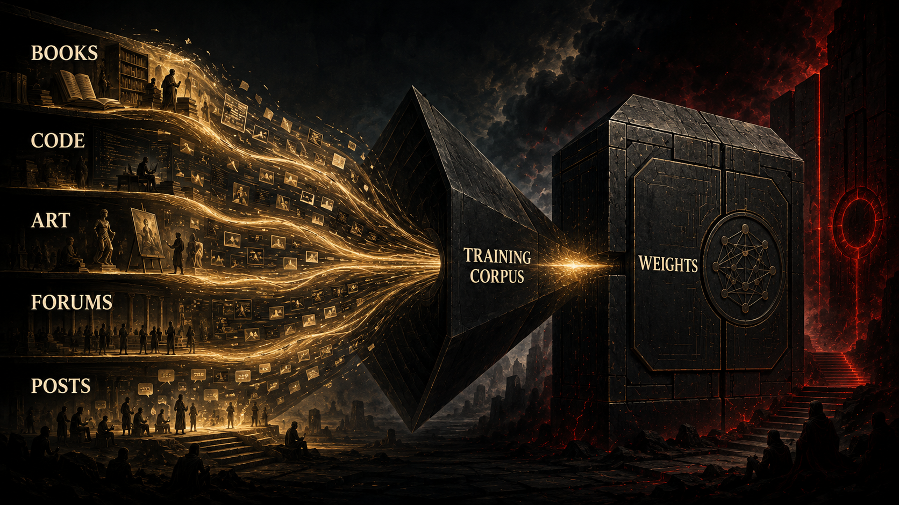

First they captured what we made. Then they captured how we think.

They did not build the AI god from nothing.
They built it from our searches, our books, our fan edits, our code commits, our forum fights, our memes, our DMs, our grief posts, our playlists, our horny late-night questions, our bug fixes, our lesson plans, our essays, our jokes, our documentation, our voice notes, our mistakes, and the endless trail of language we left behind because digital life had already become compulsory.
That sentence is doing a lot of work, so let’s slow it down.
The claim is not that every output from a model is a haunted copy of one person’s work.
The claim is not that weights are literal scrapbooks with names attached.
The claim is not that math itself is evil.
The claim is that frontier capability is downstream of mass human contribution, and the political meaning of that contribution was buried under the language of neutral computation for as long as possible.
This is the hinge chapter because it explains why social media, platform extraction, and AI cannot be treated as separate stories anymore. The earlier platform era created the conditions under which expression became massively collectible. The model era created the conditions under which that archive could be condensed into strategic capability.
That movement from archive to capability is the real scandal.
We tend to talk about data as if it were a warehouse category. Data sounds dry. Administrative. Kind of boring. But most of what mattered in the training explosion was not boring at all. It was human culture in active form. Speech, style, humor, expertise, taste, pedagogy, argument, intimacy, and craft. The machine got fluent because people were already pouring themselves into systems that could store the evidence of fluency at scale.
The quiet trick was that unpaid contribution had already been normalized long before most people cared about model training. Open a platform. Improve the answer thread. Fix the typo. Add the wiki note. Post the tutorial. Upload the review. Tag the image. Label the clip. React to the product. Answer the stranger. Build the open-source library. Debate the edge case. Explain the concept for free because someone somewhere might benefit. All of that felt like culture, community, or just ordinary internet life.
And it was.
But it was also substrate.
That is what changes once the model arrives. The same web that looked messy and alive from the human side starts looking like ingestible pattern from the machine side. Search becomes corpus. Conversation becomes training material. Creativity becomes signal. The messy abundance of public life becomes a commercially valuable precondition.
The industry likes to hide behind scale because scale makes responsibility blur. If something was trained on “the internet,” the phrase is vague enough to numb the moral imagination. But the internet is not a weather pattern. It is people. It is the sediment of people. Their work, their residue, their language, their unfinished explanations, their vulnerable performances, their expertise donated to strangers, their bad takes, their brilliance, their cringe, their labor, their obsession, their boredom, their care.
If a model becomes useful because enough people left enough of themselves behind in machine-readable form, then usefulness itself has a social debt baked into it.
That is where the legal and moral fight around weights becomes unavoidable.
The industry’s preferred framing used to sound something like this: models learn in a transformative way, they do not store the source like a zip file, and the output is not a one-to-one replay, so calm down.
That argument is not nothing. Some of it speaks to real technical distinctions. But it is also wildly incomplete as a moral theory. Because even if a weight is not a memory in the human sense, it is still a trace of exposure. It is still what remains when a machine has statistically internalized enough human material to produce synthetic competence. The exact legal status is contested. The social reality is not.
A frontier model does not emerge above civilization.
It emerges through civilization.
And that means the emotional experience of AI is not just wonder. It is estrangement. A lot of people meet these systems and feel two things at the same time: fascination at the fluency and a low, ugly recognition that something intimate was abstracted out of ordinary life and turned into strategic property. That is why so many creators, teachers, coders, and hyper-online workers feel not only threatened but weirdly gaslit. They are told the machine is just progress, while quietly recognizing fragments of the public world that made the progress possible.
That matters for creators first, but not only creators. Writers, artists, coders, musicians, teachers, forum contributors, researchers, volunteer moderators, documentation nerds, and just extremely online people all helped create the world the model could learn from. Some were paid by institutions. Many were not. A shocking amount of the internet’s most useful material was created by people who believed they were contributing to public culture, open knowledge, fandom, community, or personal visibility, not furnishing private power for the next intelligence hierarchy.
That is why the term patrimony becomes so important in the broader argument. Not because it sounds fancy. Because it names a category between “nobody owns this” and “a small number of firms get to own this completely.” If frontier capability is built from humanity’s collective archive, then treating the result as ordinary private property by default starts to look less like innovation and more like enclosure.


The politics of licensing complicate the story even further. Once the value of the archive becomes undeniable, firms start trying to regularize what was previously extracted under looser assumptions. This is where the Reddit example matters. A large social platform is no longer just a forum in this story. It becomes proof that collective human conversation can be enclosed twice: first as unpaid behavioral or cultural residue, then again as a licensable asset for model development.
That double enclosure is one of the ugliest moves in the whole cycle.
First the system convinces people to generate the field.
Then it convinces the world the field is a commodity.
Then it sells the field back as capability.
Then it tells the people who generated it that the resulting machine is progress and maybe also their replacement.
That is not a clean innovation story.
That is empire logic with better branding.
And it is not only an ownership story. It is also a shelf story.
Supermarkets did not need to invent the tomato. They needed to control the shelf where the tomato was sold. AI firms are learning a similar move with cognition. They do not need to outlive every artist, every programmer, every writer, or every expert in a pure merit contest. They need to become the first interface the customer reaches. The prompt box, the chatbot, the subscription layer, the clean white rectangle on the screen: that is the new shelf.
Once the shelf controls first contact, the value fight changes. Human work does not have to become worthless to become weaker. It only has to become easier to price downward. The creator is still there. The craft is still there. The judgment is still there. But the interface now stands between the creator and the customer, and that is enough to start renegotiating what the human on the other side is supposedly worth.
It is also why the politics of consent cannot be reduced to some fantasy of perfect individual opting in. Most people did not meaningfully negotiate with the systems that absorbed their residue. They lived, posted, coded, taught, uploaded, commented, revised, joked, and worked inside environments that had already become necessary for participation. “Consent” in that context often means something closer to procedural surrender. You click through because the social and economic world is already routed through the stack. Later, that routinized surrender gets reframed as if the archive simply existed, ownerless and ready for compression by whoever reached scale first.
This is also the chapter where the emotional tone of the book changes a little. Up to this point, a reader could still maintain some distance and think, okay, platforms got creepy, social life got weird, the pandemic accelerated bad habits, sure. But here the realization gets personal in a different way. The machine is not only around us. It is made from what we already gave away, often without understanding the end use, sometimes without a meaningful alternative, and almost never under conditions of real bargaining power.
That is why people feel a particular kind of insult when AI products are introduced as if they arrived through pure genius. Of course there is real engineering. Of course some technical leaps are genuine. But genius did not produce the archive. Society did. Users did. Workers did. Creators did. The culture did. The machine inherits the labor of the species and then reappears under a corporate logo.
Once you see that, the ownership question becomes impossible to dodge.
If human civilization was the training field, who should govern the resulting capability?
If the archive was collectively generated, should the output be permanently enclosed by whoever had enough capital and compute to compress it first?
If the public supplied the substrate, what obligations attach to the machine?
These are not abstract future questions anymore. They are already showing up in fights over copyright, licensing, model access, public funding, state partnership, and who gets to speak with the authority of synthetic intelligence.
The interpretation advanced in this project is not that current law has already settled the matter in favor of public patrimony.
It absolutely has not.
The interpretation is that the law is lagging a moral reality that is already visible: weights built from collective human expression should not simply inherit the default moral status of ordinary proprietary assets.
That is not anti-technology.
It is anti-enclosure.
And unless that distinction becomes politically legible, the next phase of the AI economy will keep repeating the same move: privatize what was socially produced, then market access to it as destiny.
This chapter adapts the documentary argument developed in the research paper Chapter 04: AI Arrives When the Human Raw Material Already Exists. The PDF version is here. That paper grounds the weights debate in Copyright Office records, memorization research, licensing developments, court conflict, and the social-to-model bridge.
Once the archive becomes commercial capability, the next fight is not only about creators. It is also about workers. The same industry that learned from human labor started using AI rhetoric to weaken that labor, reorganize it, and call the whole process inevitable.
To our beloved:
Copyright Mark Uriostegui 2026